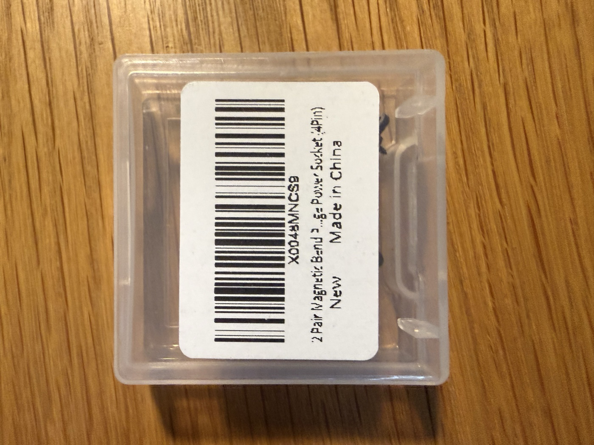
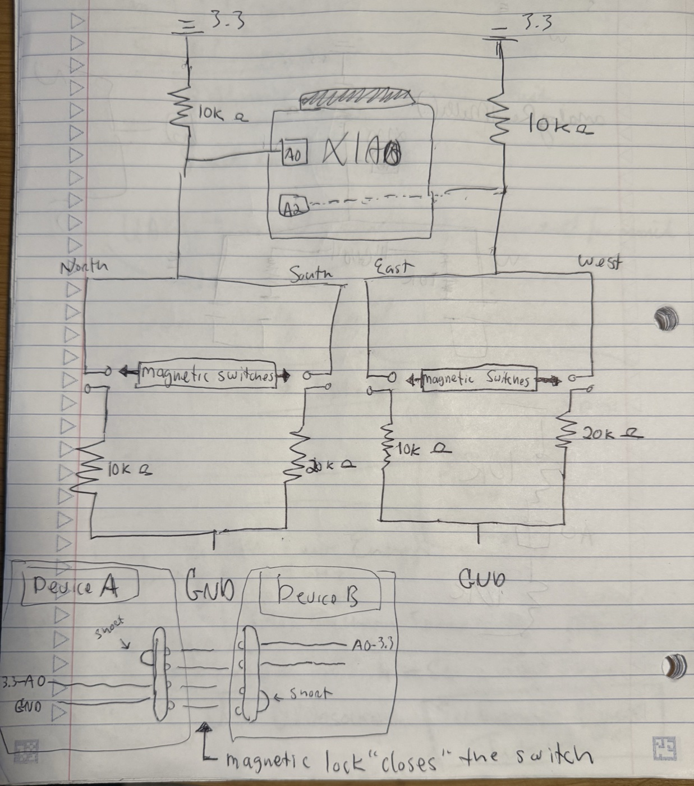
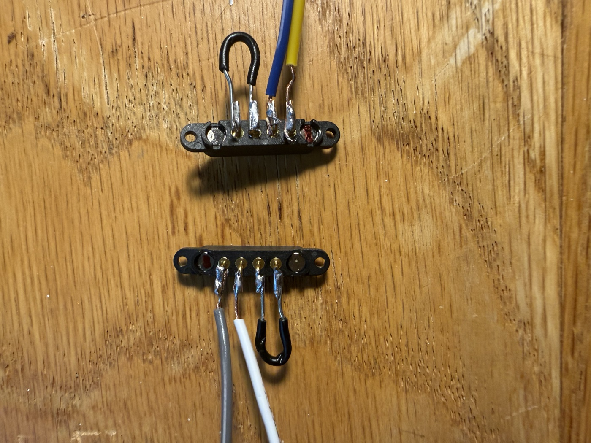
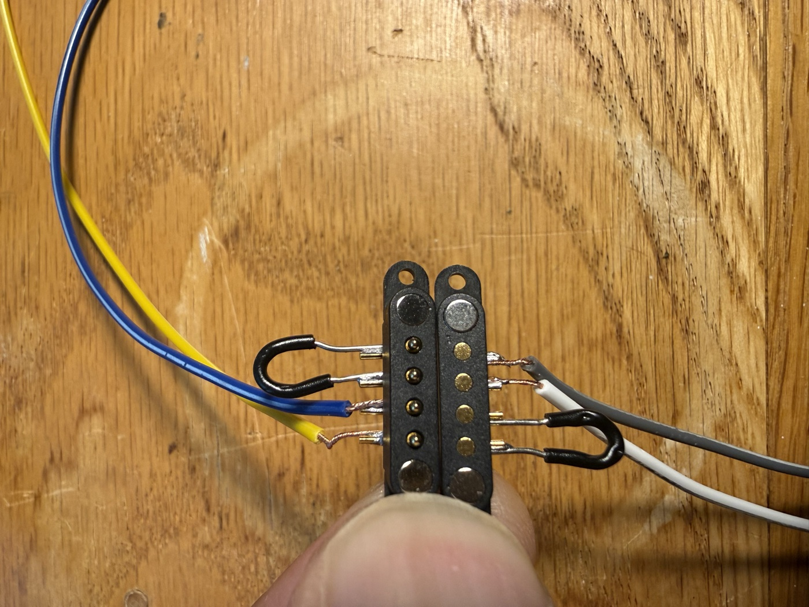
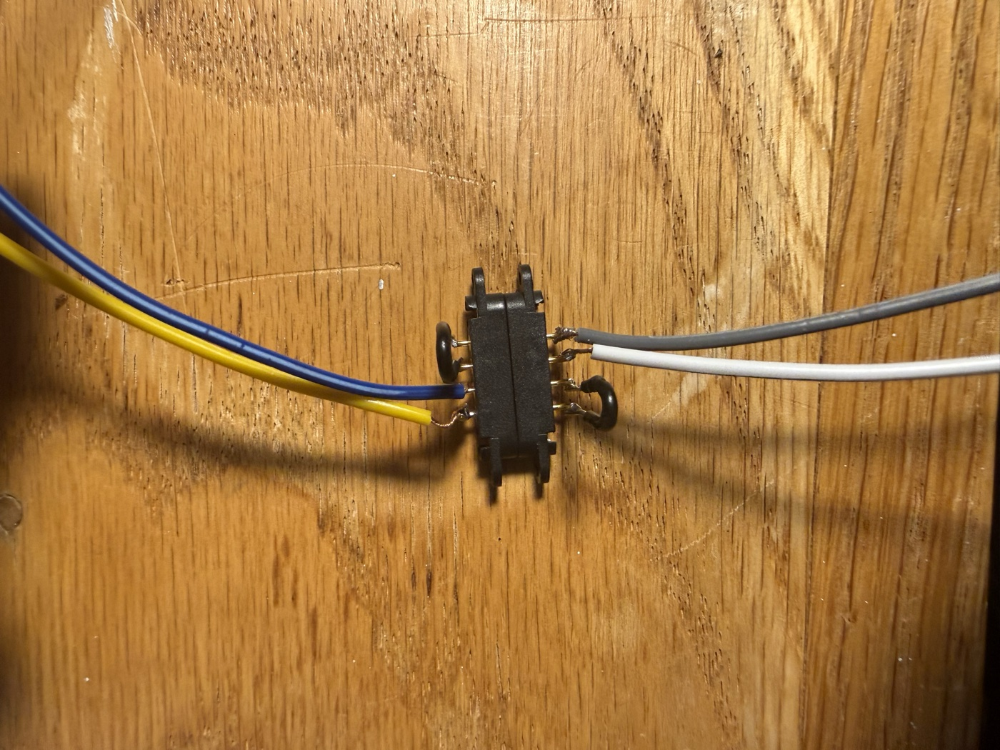
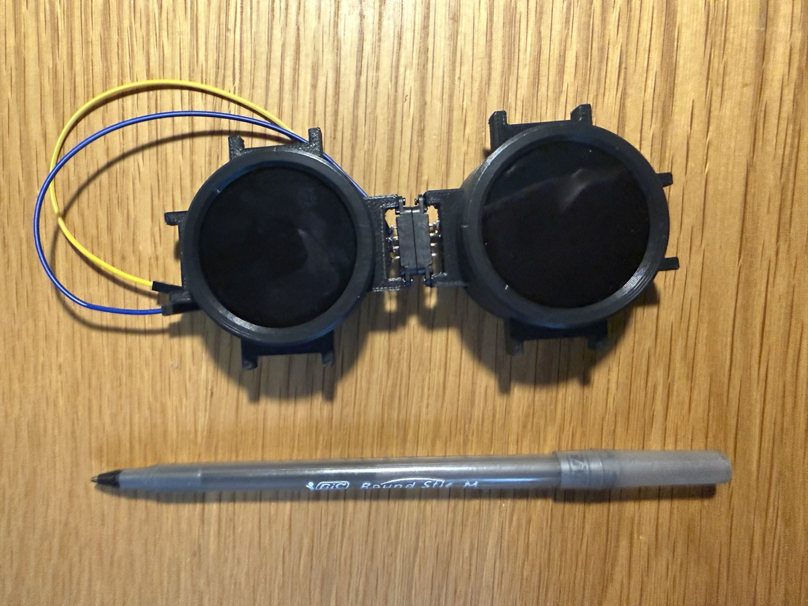
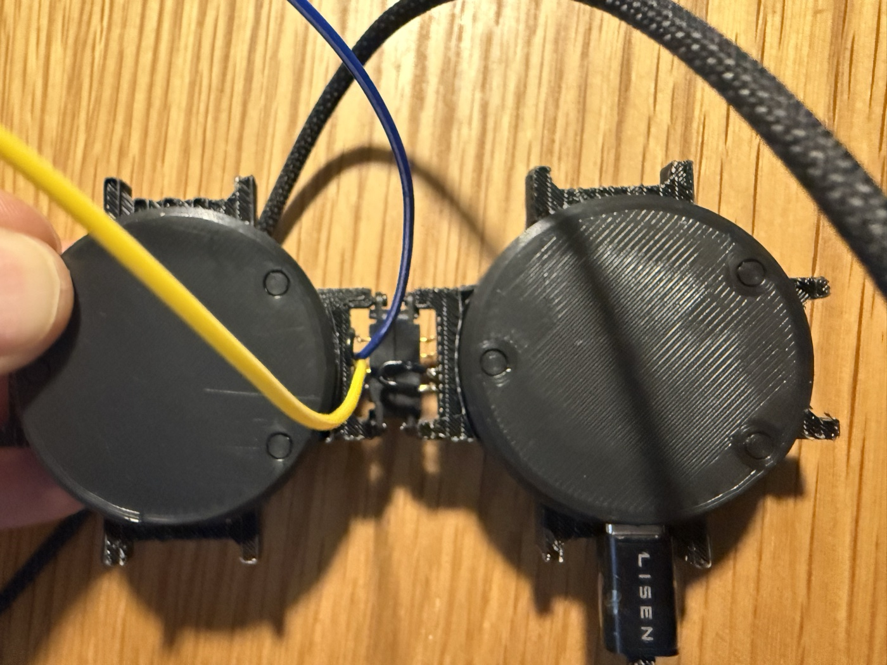
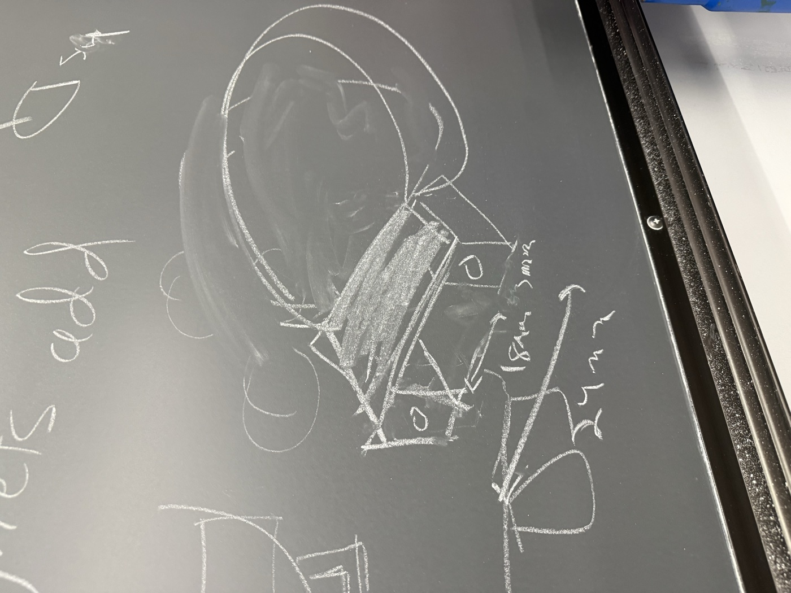
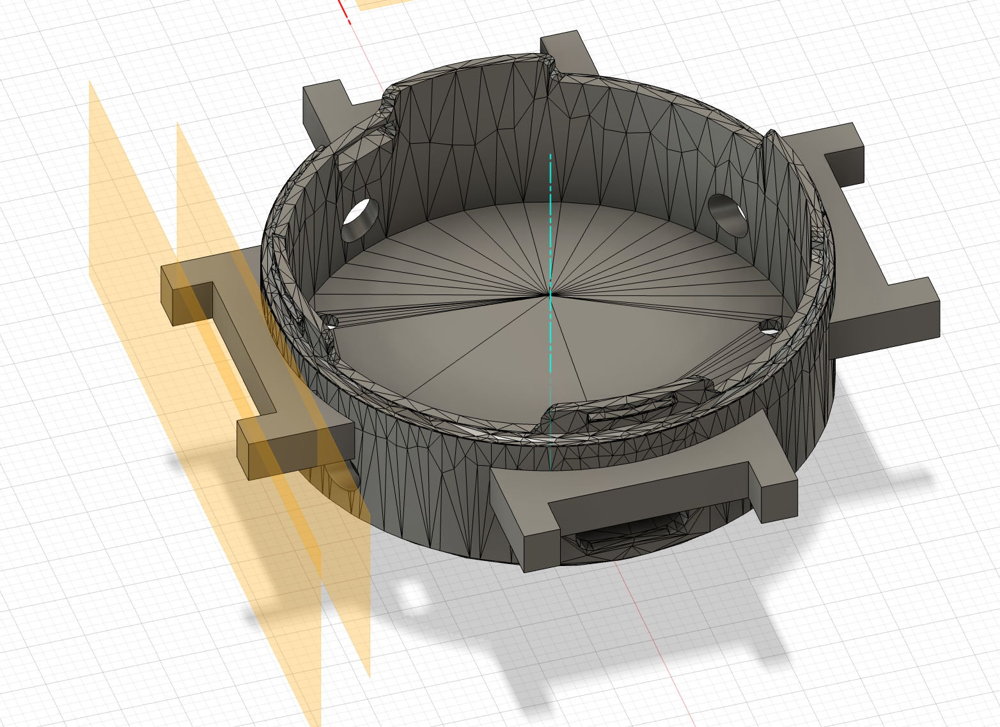
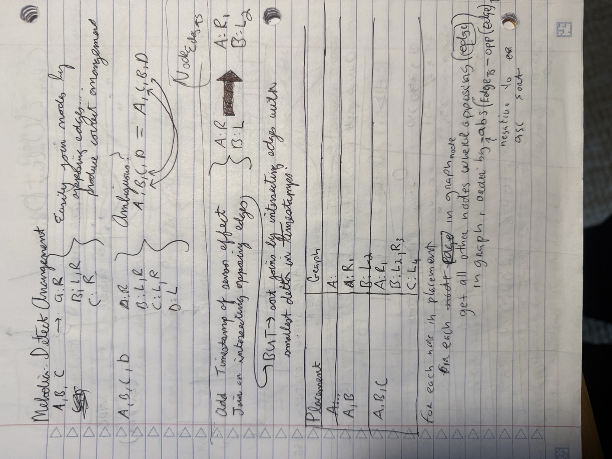

The MVP implements Melodia, a platform for building games through magnetically connecting and sensing devices that have touch screens and can play sounds. This MVP tackles the hardest parts, which are creating cases that can magnetically connect to one another, detect connection, and detect arrangement. I think the MVP was a success but I have a lot of work to do to refine this.

There were a lot of challenges, namely that the display and other components use up all but two pins on the XIAO, and only if I disable capabilities. I will need to consolidate to one (so voltage divided 4 cardinal directions?) so I can at least have a buzzer for sound, but I want an amp. These displays came in last minute from China so I haven't slept so I could re-wire my OLED setup from breadboards into the actual case — forgive the brevity on the write up.

We have two voltage dividers per pin, and two pins per device, so 4 voltage dividers in total that are built on a device to detect cardinal connections: N, E, S, W. Organized into N+S and E+W pairs, which have separate circuits but are identical in structure.
So for N+S we have:
So then we have branches in code using analogReadMillis(pin) to read A0/A2 to determine connectivity, then feed that and a timestamp to our arrangement algorithm and broadcast over ESPNOW with mac-address as identity. I have proven this for N+S but need to make sure my circuit can support E+W in the same circuit I guess.



The magnetic connector pair: open, contacts exposed, and closed




I learned a lot working on the enclosure in Fusion! Because this originated from an .stl model I had to import and resurface all of the faces and edges. There was no orientation to origin, so I had to identify the axis of origin, and then circumscribe the true circle. I learned how to project points from different planes to other planes as references (see axis in photo) and then got a better intuition for 3D. If you project from a bottom plane's rectangle to a perpendicular plane (think side) you're just going to get... a line and some points along it.
I created construction planes from projected lines and then offset construction planes from those to figure out the mount surface for each side, then sketched. I used rectangular patterns to rotate this around the axis (blue line) for each side. I did the same for wire holes that cut through the body for wire feeding.
Can explore the enclosure above (or download it below).
Just what I've been sketching.
